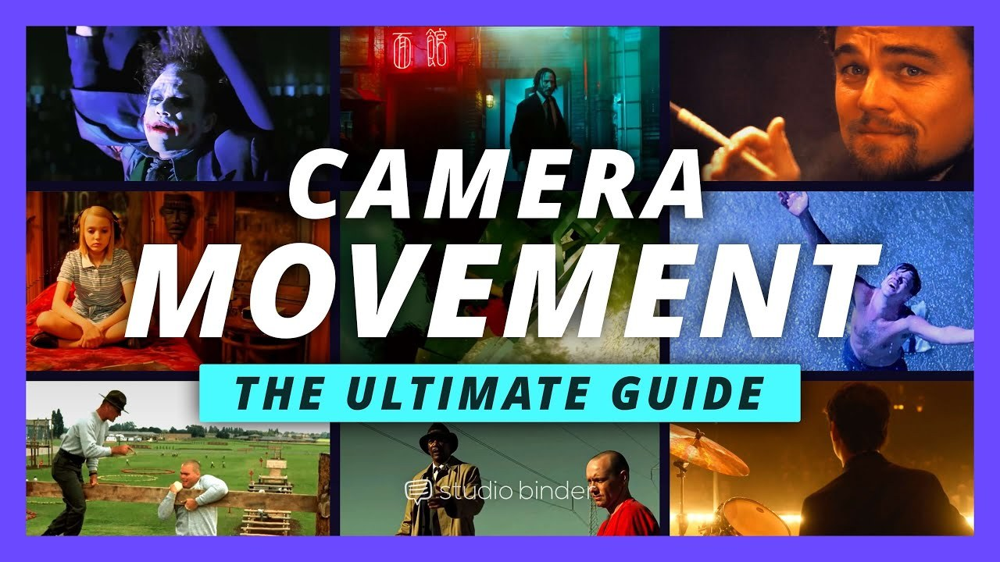

歷史參考｜動畫作品集：用清楚分工、表演與動作規劃呈現能力
2023 年動畫師 Ling Han 以自己的學生作品集分享剪輯與內容選擇，重點包括交代鏡頭貢獻、保留二維規劃過程，以及用走路、默劇和互動呈現角色個性。

動畫 ★★★☆☆
完整分析
製作流程：把二維探索接到三維表演
作者以草圖和粗略二維動畫規劃姿勢、動作與鏡頭，並在成片旁放規劃縮圖；蜥蜴案例持續嘗試再替換姿勢，保留原本故事與角色方向，展示從構想到表演的迭代。
製作呈現：讓觀眾知道你完成什麼
作品片段可加簡短字幕交代專案、公司與自身負責部分；走路循環應反映角色個性，無對白表演則展示重量、平衡及環境互動，讓能力能從具體鏡頭讀出來。
判斷限制：不必湊滿所有鏡頭類型
作者強調各類內容不是必備清單，最重要的是展示最好的作品；申請動畫職位也不必證明能自製綁定，可使用品質合適的現成角色。這些是作者經驗，並非每家公司的固定錄取規格。
BRIEF｜來源已驗證；證據深度較有限，完整分析會明確區分已知資訊與待驗證事項。